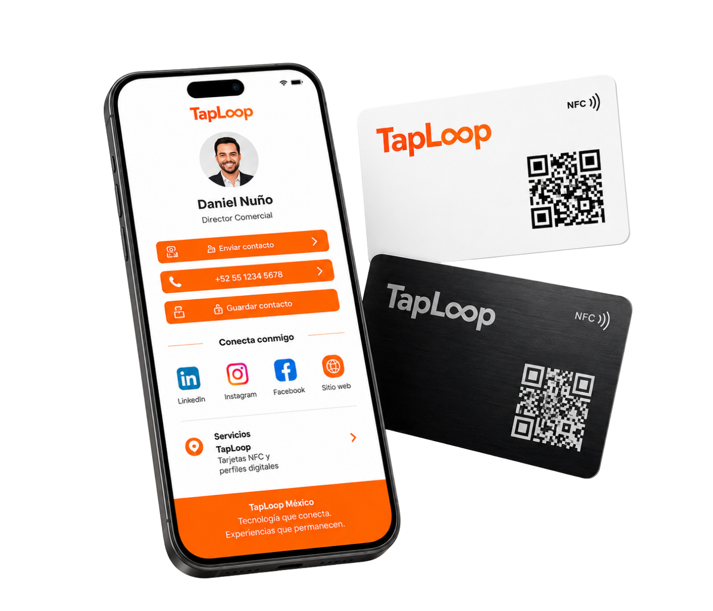
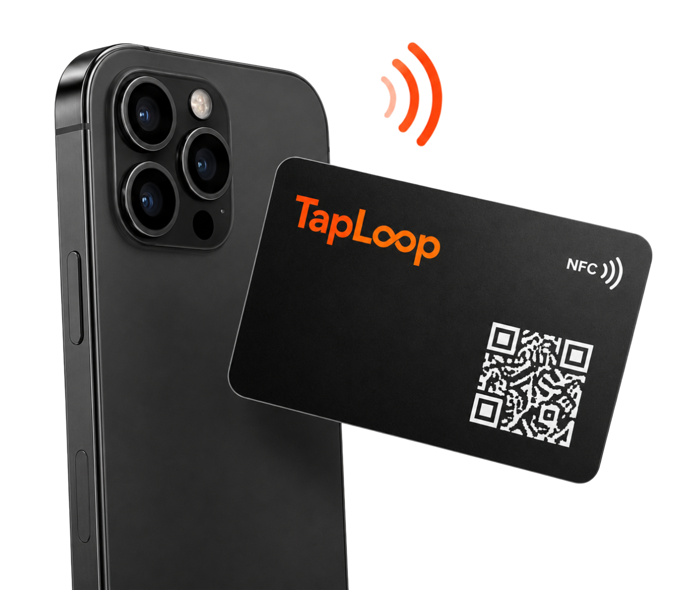
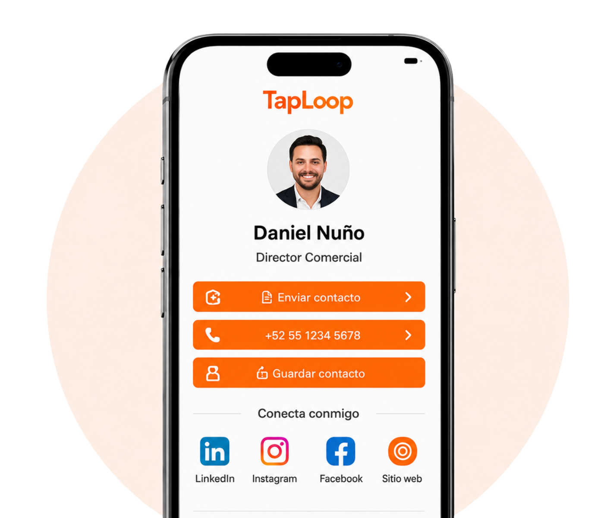
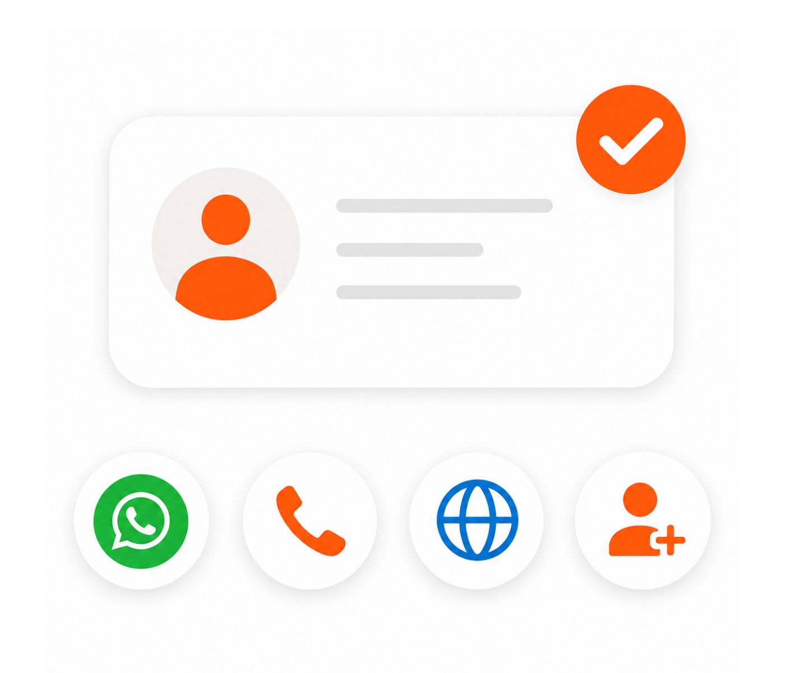
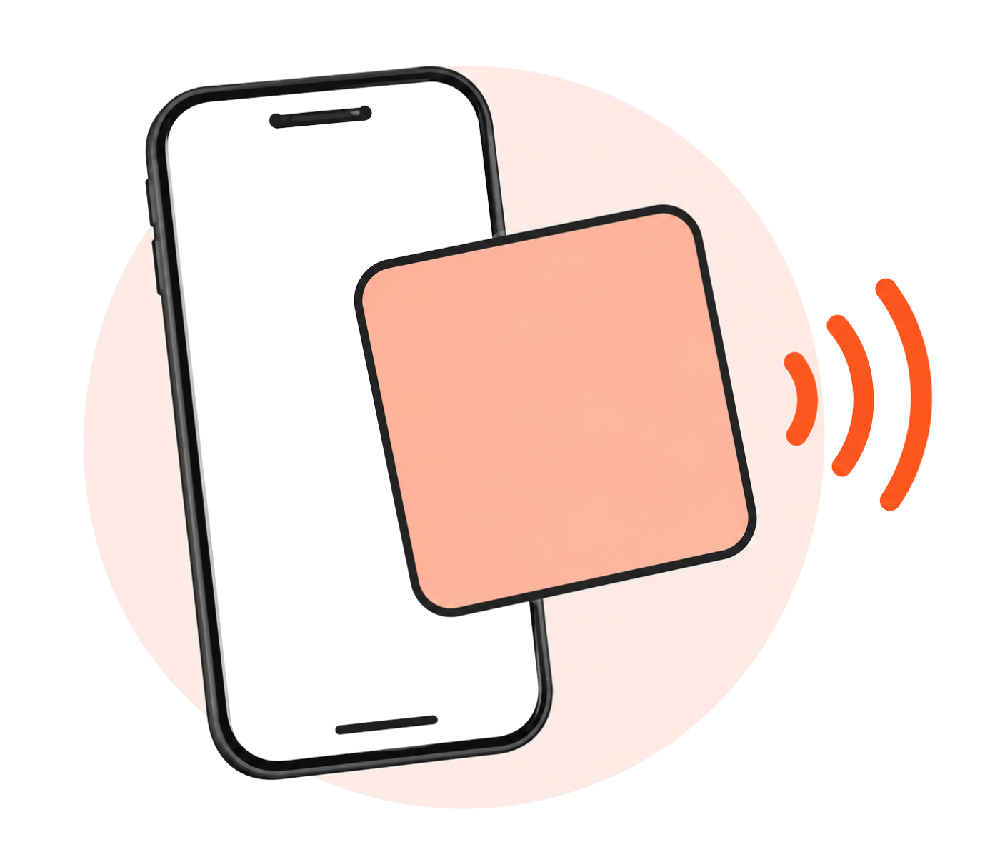
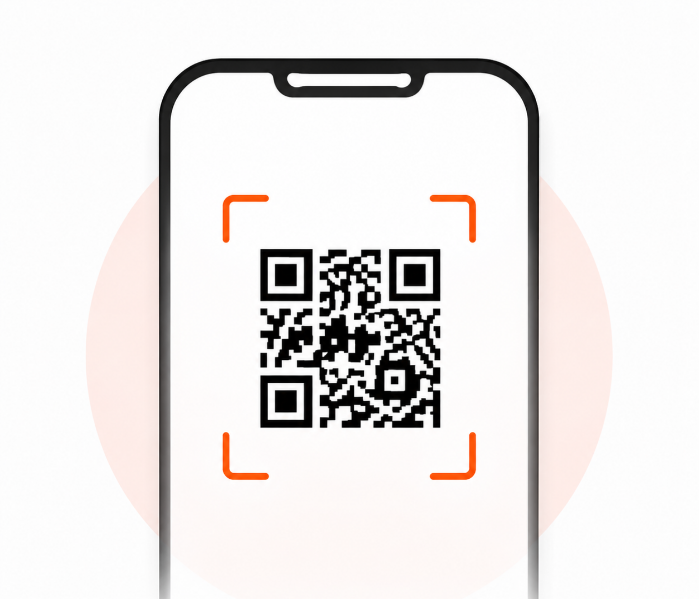
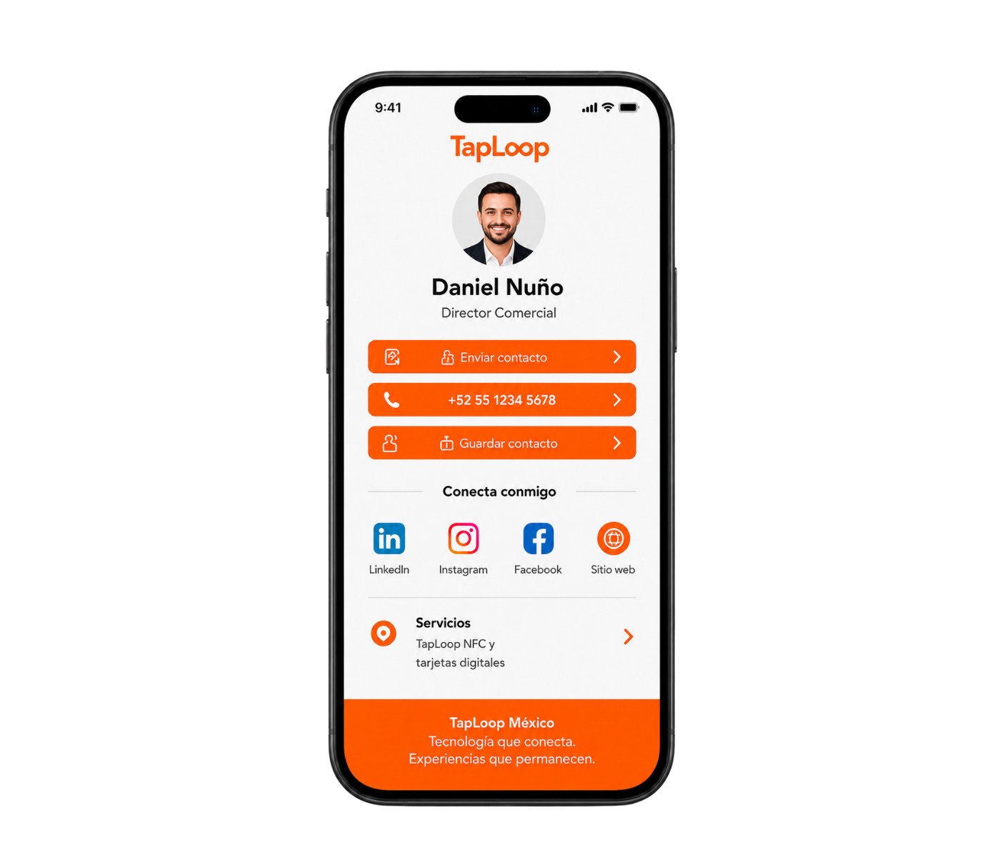

Share Your Details
Logo, contact details, links, and quantity.
How TapLoop works
Tap the card or scan the QR code to open a digital profile with contact details, WhatsApp, social media, website, location, files, and key links.
Request a Quote
Every card is designed, programmed, tested, and prepared for real use.
Logo, contact details, links, and quantity.
Review a branded physical card and digital profile.
The chip and QR code are linked to the same profile.
The card is tested and shipped ready to share.
The other person opens your profile in seconds and can save your contact or continue the conversation.



NFC creates a fast tap experience, while the QR code works as a universal backup for any phone camera.

Fast, modern, and app-free for compatible phones.

Works when NFC is unavailable or the user prefers the camera.

One profile holds all the ways customers can reach you.
Answers about TapLoop NFC cards, digital profiles, and team solutions.
It is a physical card with an NFC chip and QR code that opens a digital profile with contact details, WhatsApp, social media, website, and links.
No. The digital profile opens in the phone browser through NFC or QR code.
Yes. The card and profile can be customized with your logo, colors, name, role, QR code, and key links.
Yes. We can create a consistent visual system and one digital profile for each employee.

Ready to start?
Tell us how many cards you need, which card type you prefer, and what your digital profile should include.